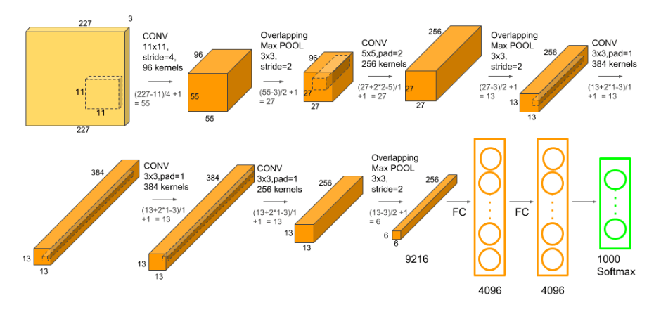

AlexNet
Table of Contents
1 AlexNet
https://proceedings.neurips.cc/paper/2012/file/c399862d3b9d6b76c8436e924a68c45b-Paper.pdf 2012
AlexNet 这一波 AI 热潮的开端.
1.1 Network

原始的 alexnet 的输入是 227x227, 它的主要特点是:
- 使用了 11x11, 5x5, 3x3 的 conv
- 使用了 overlapping max pooling, 即 kernel 比 stride 大的 pooling, 代替之前的 average pooling
- 使用了 relu 代替之前 tanh
- 在 fc 层之后使用了 dropout
torchvison 的 alexnet 加入了一个 Adaptive Average Pooling, 使得它能支持变长的输 入.
AlexNet(
(features): Sequential(
(0): Conv2d(3, 64, kernel_size=(11, 11), stride=(4, 4), padding=(2, 2))
(1): ReLU(inplace=True)
(2): MaxPool2d(kernel_size=3, stride=2, padding=0, dilation=1, ceil_mode=False)
(3): Conv2d(64, 192, kernel_size=(5, 5), stride=(1, 1), padding=(2, 2))
(4): ReLU(inplace=True)
(5): MaxPool2d(kernel_size=3, stride=2, padding=0, dilation=1, ceil_mode=False)
(6): Conv2d(192, 384, kernel_size=(3, 3), stride=(1, 1), padding=(1, 1))
(7): ReLU(inplace=True)
(8): Conv2d(384, 256, kernel_size=(3, 3), stride=(1, 1), padding=(1, 1))
(9): ReLU(inplace=True)
(10): Conv2d(256, 256, kernel_size=(3, 3), stride=(1, 1), padding=(1, 1))
(11): ReLU(inplace=True)
(12): MaxPool2d(kernel_size=3, stride=2, padding=0, dilation=1, ceil_mode=False)
)
(avgpool): AdaptiveAvgPool2d(output_size=(6, 6))
(classifier): Sequential(
(0): Dropout(p=0.5, inplace=False)
(1): Linear(in_features=9216, out_features=4096, bias=True)
(2): ReLU(inplace=True)
(3): Dropout(p=0.5, inplace=False)
(4): Linear(in_features=4096, out_features=4096, bias=True)
(5): ReLU(inplace=True)
(6): Linear(in_features=4096, out_features=1000, bias=True)
)
)
在 alexnet 的基础上, vgg 把所有 conv 都换成 3x3, 以支持更深的网络.
Backlinks
Image Classification (Image Classification > AlexNet): AlexNet